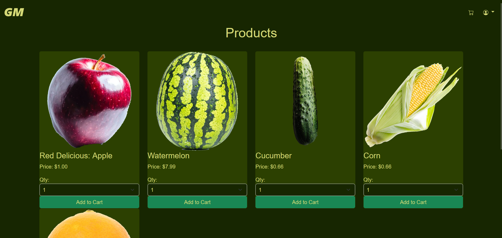
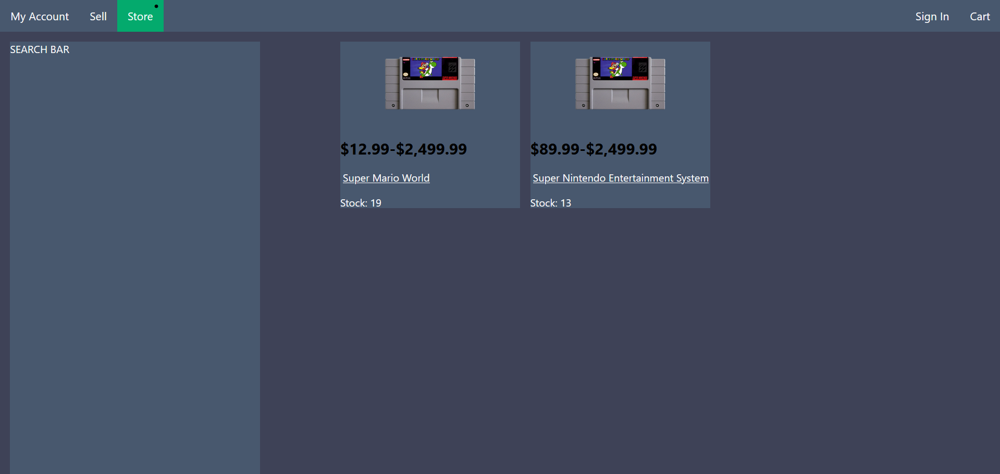
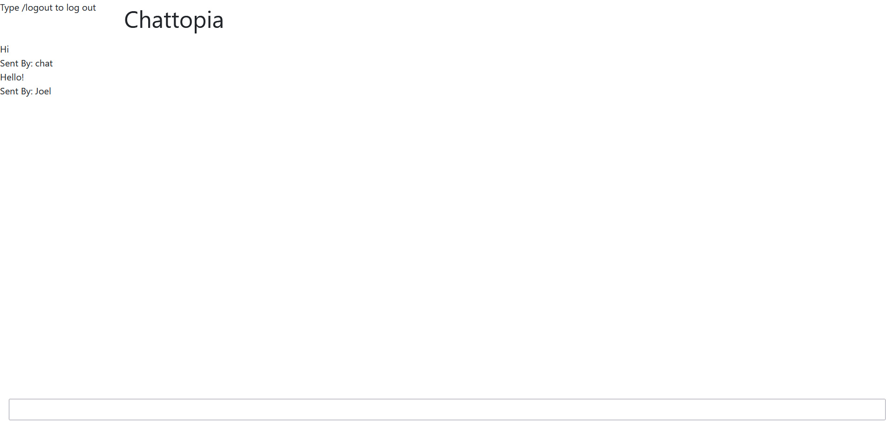

• Project developed in two weeks from March 2023 to April 2023.
• Developed using HTML, CSS, Bootstrap, Javascript, JSON, NodeJS, and MySQL.
• Went through the process of agile development.
• Deployed database that stores log in information, billing information, shipping details, and product information.
• Debugged client and server issues experienced during testing.
• Developed front-end and back-end work.
Video Demonstration | Source Code
|

|
• Project developed from January 2022 to April 2022.
• Developed using HTML, CSS, Javascript, jQuery, Python, Flask, and MySQL.
• Learnt how to plan your work accordingly by breaking up your project.
• Deployed database that stores log in information, billing information, shipping details, and product information.
• Used the Flask framework to develop a web application and communicate with my SQL database.
• Used jQuery to update webpages with stock information.
Source Code
|

|
• Project developed from January 2023 to April 2023.
• Developed using HTML, CSS, and Bootstrap.
• Created a responsive, accessible website.
• Used the Wikipedia article, The Video Game Crash of 1983, for the pictures and text used on the website.
Website | Source Code
|

|
• Project developed in one week in April 2020.
• Developed using HTML, CSS, Javascript, jQuery, Python, Flask, and MySQL.
• Deployed database that stores log in information.
• Used the Flask framework to develop a web application and communicate with my SQL database.
• Uses JavaScript to refresh the page when chat message is sent.
Source Code
|

|